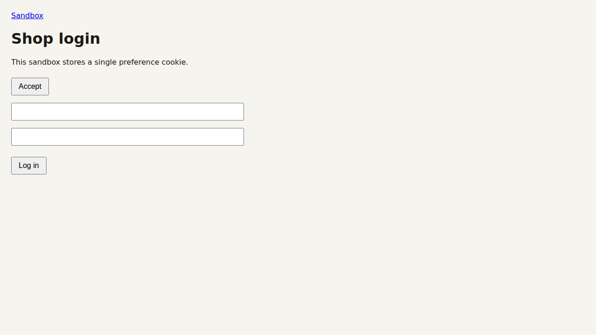

Autonomous Browser Agent with Safety Gate & BudgetLedger
Inspect actual browser actions captured during live runs without running a browser.

CODE_ALLOWLIST blocks unauthorized or dangerous hosts.blast_radius.json.| Scenario | Goal | 1st Run LLM | Cost |
|---|---|---|---|
| R1 | Books to scrape (search & wiki) | 22 calls | $0.0038 |
| R2 | Saucedemo e-commerce flow | 3 calls | $0.0001 |
| R3 | Hacker News top 3 digest | 2 calls | $0.0004 |
| R4 | arXiv API search query | 6 calls | $0.0006 |
| R5 | The-Internet resilience suite | 5 calls | $0.0001 |